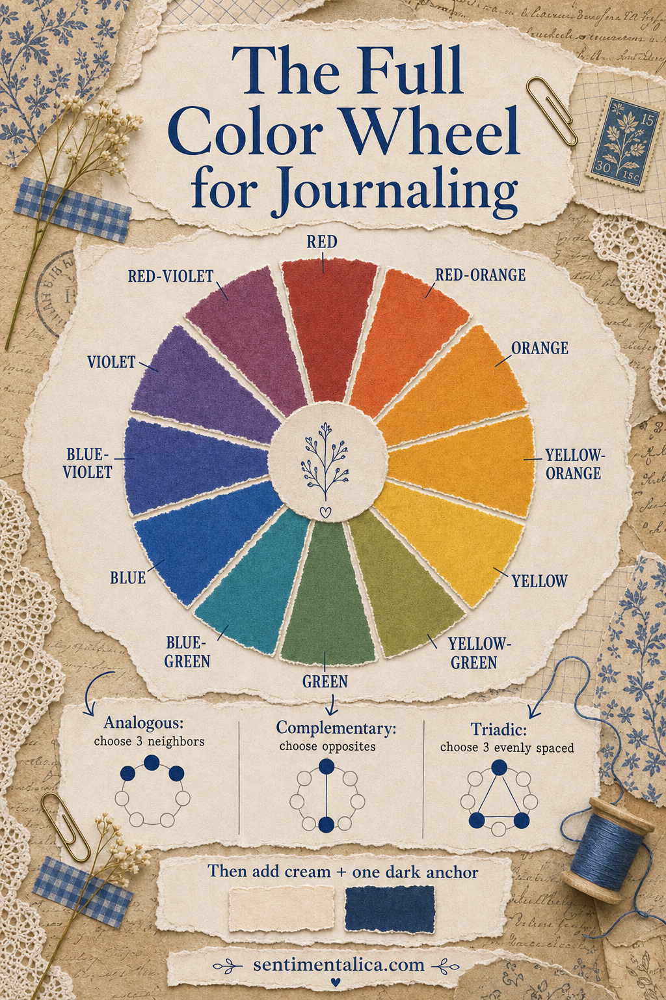
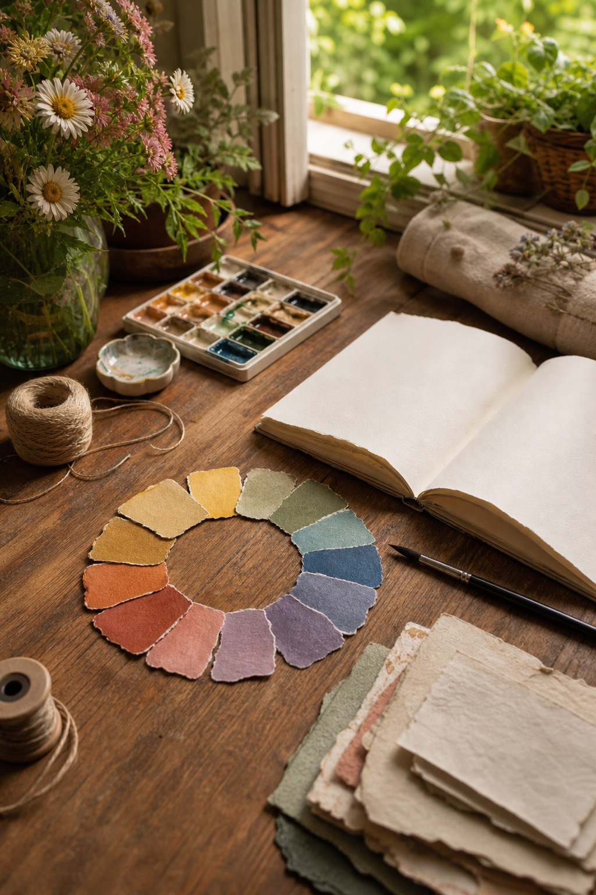
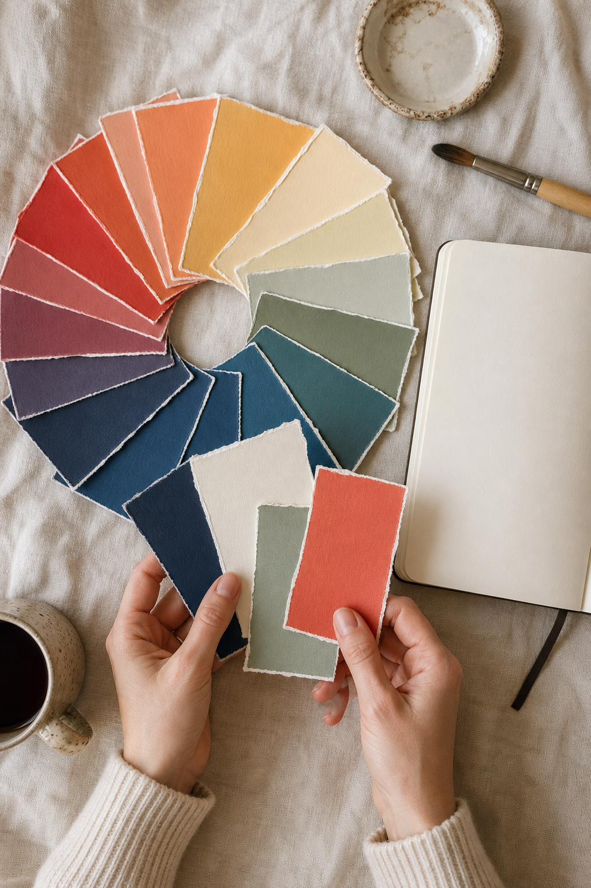

The color wheel is not a rulebook. It is a shortcut for understanding why some colors feel peaceful together while others create energy. Once you can identify neighbors, opposites, and evenly spaced hues, choosing journal scraps becomes faster and more intentional.

Start with one color you already love
Do not begin by trying to use the whole wheel. Pick a color from your photograph, printable page, fabric, or memory. That becomes the starting hue. You can then choose one of three simple relationships depending on the mood you want.
Analogous colors feel connected
Analogous colors sit beside one another on the wheel—blue, blue-green, and green, for example. They share visual ingredients, so they blend naturally. Use one as the main color and the other two in smaller amounts. This is an excellent choice for botanical pages, quiet travel memories, and layered backgrounds.
Complementary colors create a spark
Complementary colors face each other: blue and orange, red and green, yellow and violet. Their contrast makes small details stand out. Choose one side as the dominant family and use its opposite sparingly. A navy page with one golden tab feels lively; equal amounts of navy and gold may feel more theatrical.

Triadic colors feel playful
A triadic scheme uses three evenly spaced points, such as red, yellow, and blue. It naturally carries more energy. Make one hue the leader, one the support, and one the accent. If all three occupy equal space, the page can lose its focal point.
Add neutrals after choosing the relationship
Color-wheel schemes become more useful for journaling when you add a strict light neutral and a dark anchor. Cream, pale stone, or warm white gives the eye somewhere to rest. Navy, charcoal, deep brown, or forest green grounds the page. These neutrals do not weaken the palette; they make the colors easier to notice.

Give four colors four different jobs
A practical page palette needs a dark anchor, a light neutral, a support mid-tone, and a hero accent. Let the light neutral cover the most space. Repeat the support color several times, keep the anchor decisive, and make the accent the smallest note. A useful starting ratio is 60 percent neutral, 25 percent support, 10 percent anchor, and 5 percent accent.
Test the palette before committing
Tear small swatches and place them beside one another. Photograph them in daylight, then convert the photo to grayscale. If every swatch becomes the same gray, vary the lightness. A strong palette needs contrast in value as well as harmony in hue.
Disclosure: The teaching infographic and styled photographs in this article were created with AI-assisted image tools and art-directed for accuracy and clarity.